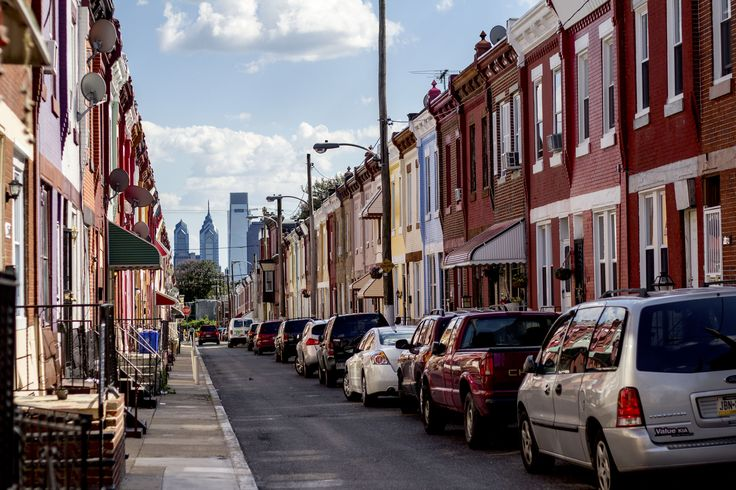

On a side street in Philadelphia, a restaurant called Kanella South appeared on Yelp in the autumn of 2015. It held a 4.5 star rating and nearly 250 reviews from people who called it a neighborhood favorite for Greek food and cocktails. By the spring of 2018 it was gone. No announcement, no explanation, just a listing that stopped updating.
This is not a story about one restaurant. It is about what survival actually depends on, and why it often has little to do with how good a place is. Using Yelp data on more than seven thousand Philadelphia restaurants, we traced what separated the ones that lasted from the ones that closed. The pattern is structural and largely invisible. The most counterintuitive finding: the restaurants that close are often not the worse ones.
Before judging any single restaurant, it helps to zoom out. Cities are not even playing fields. The neighborhood a restaurant opens in shapes what it can offer, what it costs to stay open, and who walks through the door. Some locations start with an advantage. Others do not. The question of who survives may be partly decided before a single dish is served.

This map plots every restaurant in our Philadelphia dataset, using the same open-and-closed restaurant language introduced in the opening animation. At a glance it looks like scattered dots, but once you notice how the colors cluster, the structure of the city begins to surface.
Independent restaurants concentrate heavily in a handful of neighborhoods, while chains spread more evenly across the whole map. Some areas are almost entirely made of thriving independents, others are quietly dominated by chains. Location itself is a form of inequality. Where you open says something about how long you are likely to last. But place is only where the story begins.
If location shapes the starting line, what about quality? We might expect better-rated, more-reviewed restaurants to survive longer. This heatmap groups restaurants by rating and review count, then separates those still open from those that closed. If ratings and review counts strongly determined survival, the two panels would settle into different parts of the grid. Instead, they overlap across many of the same cells. Higher ratings and more reviews may help a little, but they do not reliably separate the restaurants that survive from the ones that close. Independents still survive at lower rates than chains, 53.3% compared with 70.4%, but the larger point is simpler: customer love does not guarantee survival. The question is not only how good a restaurant is. It is what actually decides who stays.
The answer is not in the reviews. It lives in the choices a business makes before a single customer walks through the door: whether it offers delivery, how it prices itself, what kind of neighborhood it sits in. These decisions are quiet and easy to overlook, yet they shape the ending.
This is an interactive dashboard. Click through the variables on the left, delivery, price, cuisine, parking, and the survival rate on the right shifts with your choice. We invite you to find out for yourself which decisions actually move the odds and which barely matter at all.
The strongest signal by far is delivery. Restaurants that offer it survive at 68.9%, compared to just 33.6% for those that do not, a gap of nearly thirty-five points. Cuisine matters too, ranging from Caribbean at 71.6% down to French at 31.4%. Parking and takeout, by contrast, make almost no difference. What separates survivors is less about how good the food is and more about structural choices that decide how many customers a business can reach.
If operational choices matter, what about the economic ground a restaurant stands on? These two maps place neighborhood rent on the left beside restaurant ratings on the right, year by year. We want to see whether survival is shaped not only by the restaurant itself but by the cost of the land beneath it. The pattern is uneven, but there is still a relationship: places where rent rises also tend to show some increase in restaurant ratings. The relationship is relatively weak, though. Higher rent does not automatically mean higher ratings, and highly rated restaurant areas are not always the most expensive ones. That matters because ratings describe customer experience, while rent describes the pressure of staying in place. Location is not just a coordinate, it is a recurring bill, and that pressure can sit outside what Yelp stars are able to show.
The data has shown us what moves the odds. Below are two real Philadelphia restaurants, both well-loved, both sitting at 4.5 stars. You grade them yourself, factor by factor, against the city's benchmark. What separates them does not become visible until the last few rows.
Kanella South opened in 2015, earned 4.5 stars and nearly 250 reviews in under three years, and then closed. Barbuzzo has been open since 2010, 4.5 stars across nearly three thousand reviews, still here. On rating they match exactly. On parking both are covered. The split comes on delivery and takeout, which Kanella South did not offer, and on cuisine, where Greek falls below the city's survival average and pizza clears it. Click each cell and judge for yourself.
The answer was already in the numbers. Kanella South had none of the three factors that move survival. Among restaurants like it, about one in three makes it through. Barbuzzo had all three. Among those, nearly seven in ten do. Both sit at four and a half stars, yet they ended differently. What divided them was structural reach: delivery, takeout, and cuisine type. Together, these three factors predict restaurant survival with 70% accuracy across our full dataset. Reviews tell you how good a place is. They do not tell you how likely it is to last. The stars, on their own, were never what decided.